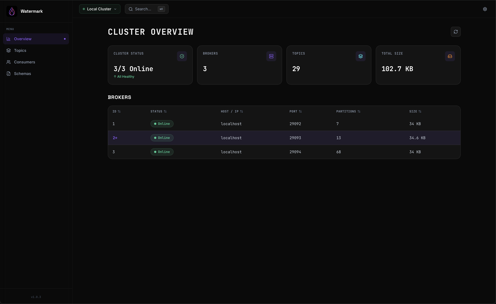

Browse topics, monitor consumer lag, replay messages — all in a lightweight desktop app. No Docker. No JVM. Just Kafka.

Three high-impact features that solve real problems your team faces every day.
Set lag thresholds per consumer group with glob pattern matching. Get real-time OS notifications when lag spikes — no more silent failures.
ShippedRight-click any message → Replay. Edit key, value, headers before replaying. Batch replay multiple messages across different topics.
ShippedSave topic configurations as reusable templates. Clone topics in one click. Auto-match templates by name patterns with glob support.
ShippedA comprehensive suite of tools, packaged in a native desktop experience.
Real-time broker health, partition counts, storage metrics with hero cards and sparklines.
Browse, create, edit, delete. Searchable data grids with sortable columns.
Live-tail with VS Code-like JSON viewer powered by Monaco Editor.
Monitor consumer lag, group states, partition assignments. Reset offsets safely.
View Avro, JSON Schema, Protobuf with version history and compatibility badges.
Browse and manage Kafka ACL rules per principal.
⌘K spotlight across topics, groups, schemas, and annotations.
Seamless binary updates. Always running the latest version.
Watermark is built for speed, security, and simplicity — where other tools add complexity.
| Feature | Watermark | Kafka UI | Conduktor | AKHQ |
|---|---|---|---|---|
| Native Desktop | Yes | No | Partial | No |
| No Docker Needed | Yes | No | No | No |
| Startup Time | < 2s | 30s+ | 10s+ | 15s+ |
| Secure Credentials | OS Keyring | Plain text | Encrypted | Plain text |
| Consumer Lag Alerts | Built-in | Plugin | Plugin | No |
| Message Replay | Built-in | No | Yes | No |
| Topic Templates | Built-in | No | No | No |